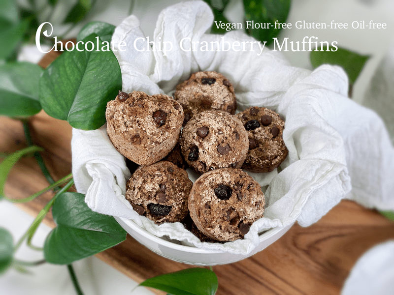
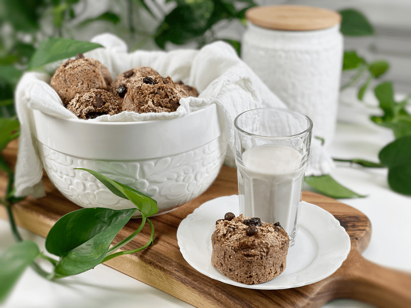

Chocolate Chip Cranberry Muffins | Baked | Nut-Free | Oil-Free | Flour-Free
Lately, I have been sticking to the same bread-like recipe base for several reasons: it works, the different flavor combinations excite the tastebuds, and it is based in whole foods that don’t include gluten, nuts, oil, eggs, yeast, or refined sugars. Plus, I have to admit, I am all about simple recipes right now. These muffins are fuss-free, easy to make, and come together in one bowl (food processor bowl). These would be splendid to serve during your holiday celebrations or family gatherings. Where one or two shall gather… Chocolate Chip Cranberry Muffins should be enjoyed!

Tips and Techniques
- For this batter, I recommend using silicone cupcake pans or liners. I tested it with paper liners and Bob found himself “hangry” by the time he got the paper liner peeled off.
- My cleaning tip when baking in silicone pans is to use hot water and a good quality dishwashing soap. Baking soda can be used as a mild abrasive to dislodge any stubborn tidbits. Allow the pan to dry before storing it. Most brands can also be thrown into the dishwasher.
- Always remove baked goods from the silicone pans to prevent the bottom from getting soggy.
- Always preheat your oven to the required temperature before putting your pans in the oven. Bake on an oven rack in the center or slightly below the center of your oven.
- If you don’t care for dried cranberries or don’t have any on hand, feel free to use raisins instead. I have made this recipe several times over and the ones I finally took a photo of have a mix of dried cranberries and raisins (I was short on cranberries).

Why I Bake in Silicone Pans
To start off, they are flexible and completely non-stick, so there is no more frustration with some of your beautiful creation getting stuck to the inside of the pan – which is just heartbreaking when you have made a real effort to turn out something delicious and homemade.
- Silicone pans make it really simple to unmold your baked goods and cooked dishes such as bread, muffins, or donuts.
- Unlike metal pans, silicone bakeware rarely needs to be greased before adding a batter, which is wonderful for those of you who are avoiding fats.
- Silicone pans are not sensitive to extreme temperatures. They can handle high heat in the oven as well as being used for frozen treats.
- In my experience, silicone bakeware bakes evenly. When using a metal pan, you can get crisping at the edges where the food has been in contact with the sides of the tin. This does not happen with silicone pans, everything browns evenly.
These muffins are not too sweet and have a bread-like texture with pockets of chewy sweetness and creamy chocolatiness. I hope you enjoy this recipe and have a blessed day, amie sue
 Ingredients
Ingredients
Yields 15 (1/4 cup measurement) muffins
- 1 cup raw whole buckwheat kernels, soaked
- 1 1/2 cups gluten-free rolled oats, not soaked
- 1/4 cup chia seeds
- 1/4 cup psyllium husks (not powder)
- 1 Tbsp pumpkin spice
- 1/4 cup unsweetened applesauce
- 1/2 tsp liquid NuNatural stevia
- 1 1/2 cups water
- 1 tsp sea salt
- 1 tsp aluminum-free baking powder
- 1/2 tsp baking soda
- 1/2 cup dried cranberries
- 1/2 cup chocolate chips
Preparation
Soaking the Buckwheat
- Place the buckwheat in a glass or stainless steel bowl, and cover with double the amount of water.
- Add 2 Tbsp raw apple cider vinegar, stir, and cover with a clean dishtowel.
- Let it sit on the counter for 30 minutes to 4 hours.
- Once ready to use, drain, and rinse before adding to the food processor.
Mixing and Baking
- Preheat oven to 350 degrees (F) and prepare your baking pan.
- I am baking the muffins in silicone cupcake pans; therefore I don’t need any oil or parchment paper to line it. One tip when using silicone baking dishes is to place them on a baking pan before loading and transporting them to the oven. Since they are soft and flexible, they can be challenging to handle once full.
- If you use any other type of pan, I recommend lining them with silicone cupcake liners so the batter doesn’t stick. I found that paper cupcake liners stuck to the muffins making them challenging to remove.
- Add the rolled oats, chia seeds, psyllium husks (not powder), pumpkin spice, applesauce, water, and salt to the food processor (along with the buckwheat). Process for a full 30-60 seconds.
- Add the baking powder and baking soda; process 10 seconds.
- Hand mix in the cranberries and chocolate chips. Immediately pour into the muffin cavities and bake for 45 minutes.
- The baking time may differ depending on your oven (all ovens seem to differ a bit) and depending on the size of the muffins you make. Keep an eye on them when making them for the first time, making sure to document the cooking time once they are done.
- To test for doneness, poke a toothpick in the center of the muffin. When the muffin is done cooking, the toothpick will come out clean.
- Once done baking, place the muffins onto a cooling rack. Do not keep them in the pan or silicone cupcake liners, or they can become soggy.
Storage
- Once cooled, you can store in an airtight container on the counter for a couple of days, or in the fridge for around 5 days.
- To freeze, wrap individually in freezer wrap, and place in freezer bags or containers. Wrapping individually will prevent ice crystals from forming. Label all packages with the name of the recipe and the date. Eat within 3 months for optimal freshness and flavor.
Up close texture shots!
© AmieSue.com